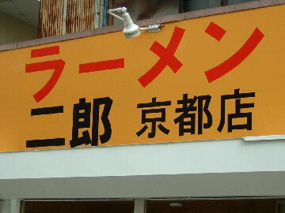
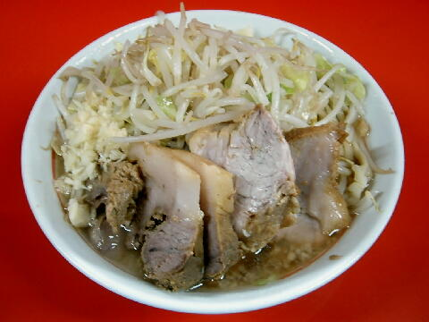

京都市 左京区 一乗寺里ノ前町 4
水・祝の翌日
11：00〜14：00 17：30〜21：30
日・祝 11：00〜14：00 17：00〜21：00

ラーメン 750円
大ラーメン 830円
控えめ 730円
ラーメン半分 680円
豚増し ＋150円
生たまご 60円、九条ねぎ 100円、辛味 50円、たまねぎキムチ 100円
店員は、神保町出身の店主と助手数名。
トウガラシ。コショウ。しょうゆダレ。
レンゲ有、エコ箸、ティッシュ有、名刺無。
BGMは、AMラジオ。
トッピングは、二郎標準。
ラーメン二郎 京都店 京都店のTwitter
「ラーメン二郎 京都」でヤフー検索
「ラーメン二郎 京都」でヤフーリアルタイム検索
「ラーメン二郎 京都」でグーグル検索

ラーメン＋豚増し ニンニク
麺は、平ストレートでやちこい小麦が詰まった二郎の太麺でおいしおす。
ぶたは、ぶっちゃけいかつい豚がなんしかぎょーさんおりはる。
スープは、豚出汁がよーしゅん出た、はんなりしたええお味どす。
ヤサイは、モヤシ8：キャベツ2の割合。ゆで方はやちこい。
ニンニクは、いっこもぶれへん刻みニンニクでおす。
「ごちそうさま」と言うと「おおきに」と返ってくる唯一の二郎どす。
ＰＣ店